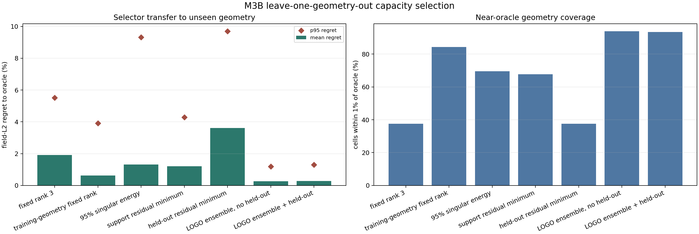
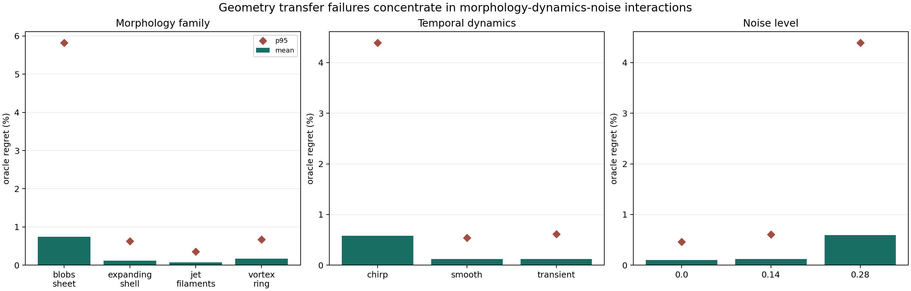
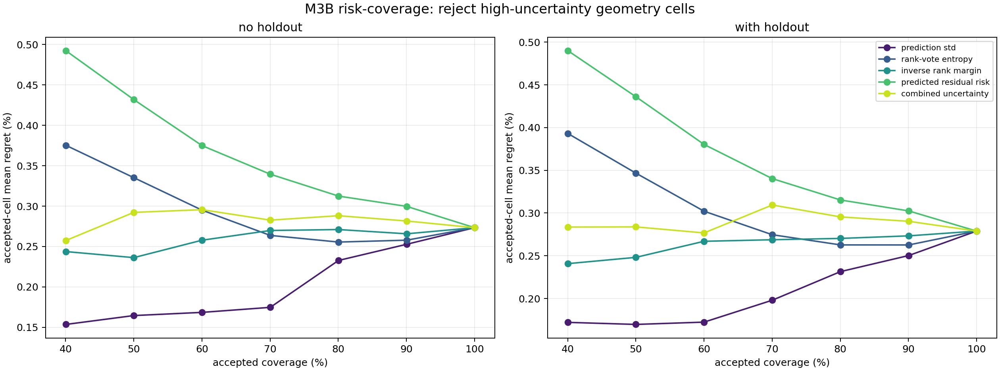

Variable-Input Deep Operator Networks
提取随机数量/位置传感器、permutation invariance；用于相机数与位置跨样本变化。不能把 PDE sensor 直接等同 BOS ray。
把“用 FNO 做三维重建”推进成可证伪证据链。最新 v3k-E 已在同一 128-call 预算下完成 BB1、BB2 与 alternating projected BB；平均加速成立，但 validation 尾部和 noise-OOD 门禁失败。研究主线因此转向 noise-aware iterative stopping，learned scalar 与 fresh confirmation 继续关闭。
N1.6 在 0f4ac73 预提交后一次性打开 6 个 geometry clusters：可部署候选严格为 25F/24Aᵀ、零高阶调用，field +3.54%、H1 +8.24%、worst +0.17%；但相对 component damping 为 -0.18%，takeover 只有 50%。exact mismatch oracle 的 +8.62% 说明物理校正仍有 headroom；rank-4 oracle 只剩 +4.99%、raw predictor 的伴随残差反而恶化 25.36%，因此下一步转为当前 A/Aᵀ 生成的 per-geometry Krylov basis，先测表示上限再训练。
validation-only 选择的 FNO-start alternating PBB 在同样 64A + 64Aᵀ 下，把绝对 field L2 从 fixed Landweber 的 0.147083 降到 0.138640；按字段配对平均 gain 为 +1.401%。但 validation 有 37.5% fields 伤害超过 1%，noise-OOD 平均 -11.561%，而 family/joint OOD 为 +14.832%/+12.285%。data objective 基本继续下降，所以核心不是优化不够快，而是缺少部署可用的噪声停止规则。
本页保留 v1-v2d 的假设淘汰过程。v3a 建立 ridge-FNO 强基线；v3b 又完成同输入 U-Net/FNO/DeepONet/自有 ray-set benchmark。自有候选在 K=4/6/8 平均均为正，但只有 K=6 通过开发门槛。请从自有算法竞技场继续，不要把历史 0/3 或一次小正均值误读成最终结论。
v2d 判决：fixed query 下，S∪Q direct 相对 S-only 提升约 15.25% / 10.51% / 12.69%，learned correction 只有 1.12% / 1.37% / 1.18%；相对 direct 分别为 -20.17% / -13.07% / -15.11%。旧 checkpoint 的训练 mask 未匹配新协议，且 88 fields 已参与开发，所以这是“当前路径失败”的 exploratory audit，不是所有修正算法的最终否定。
variable projection、null-space learning、short-solver + learned correction、query validation 都有各自前例。潜在贡献只能来自它们在 BOST 物理、相机分工、跨几何审计和 NeRIF 接口中的新组合与实证；正式命名前还要继续做相似方法检索。


| 方法 | 总体 field improvement | 优于 base | p10 | 可部署输入 | 判断 |
|---|---|---|---|---|---|
| full learned null | -0.126% | 60.98% | -4.955% | 无额外视角 | 均值负且尾部风险大。 |
| one-query accept/reject | +0.677% | 44.32% | -0.023% | 1 query view | 简单、尾部稳，但大量样本回退 base。 |
| one-query line search | +0.746% | 52.65% | -0.338% | 逐样本从候选角选 1 view | adaptive pilot；不是固定一台相机的部署结论。 |
| all-query line search | +0.956% | 65.53% | 0.000% | 全部保留视角 | 更强，但额外观测成本更高。 |
| field-oracle alpha | +1.212% | 81.82% | 0.000% | 3D truth | 只用于审计 learned direction。 |
六类角度布局上的无泄漏 leave-one-geometry-out selector 把固定 rank 3 的 mean/p95 regret `1.918% / 5.519%` 降到 `0.273% / 1.196%`，但 morphology、dynamics、noise 比 geometry 更主导失败。combined UQ 近乎失效；prediction std 能筛高风险，却不能证明 full-rank fallback 安全。



在固定 K 个视角下比较 S-only、S∪Q 直接 SIRT/TV/NeRIF/support-fit 与 S+Q correction；否则只能说多一个测量有用。
选角和 alpha 拟合只使用 Q_fit；最终 held-out reprojection 使用从未参与选择和拟合的 Q_audit。
预先固定一台相机、随机选角、最大角度间隔、当前 energy policy 分开报告，并计入同步与标定成本。
训练与验收不共用同一线性矩阵；加入 cone rays、有限光圈、标定误差、曲光线或至少独立高分辨率 forward。
加 non-learning query-null update、random/PCA/branch-difference/learned/truth direction，以及等参数单宽 FNO 和 independent ensemble。
开放/OERF 数据、重复实验、独立 audit camera、边界/积分量、PIV 补偿效果至少组成两条独立证据。
显示 19 篇
提取随机数量/位置传感器、permutation invariance；用于相机数与位置跨样本变化。不能把 PDE sensor 直接等同 BOS ray。
提取 irregular mesh、multiple inputs 与 geometric gating；只有固定 latent lift 失效后才值得增加复杂度。
coordinate neural fields 处理任意采样与几何；服务 operator 到 NeRIF 的连续 query 接口。
直接 spectral transform 处理非等距点；可作为 GINO 之外的几何消融，不是本科第一版默认。
Physics-Cross-Attention 把几何点映射到 latent，再任意位置解码；适合大规模不规则 query。
从函数空间重写 INR；用于解释 operator prior 与 per-instance neural field 的连接，不直接提供 BOST forward。
提取 `Id-A⁺A` 修正与 data-consistency 恒等式；真实 BOST 下要审计 nonlinear/changing geometry。
range/null 双网络与 incomplete measurements；最贴近 support-fit + null correction 的学习分解。
有限步 L-BFGS reconstruction + learned correction；为 physics lift 后修正提供直接邻域先例，EIT 结果不可迁移。
学习先验与数值 data-consistency 交替；提醒不要让自由网络隐式承担全部 forward physics。
BB1/BB2 是无约束两点谱步长基线，不是 BOST 新算法；v3k-E 用它审计固定步是否过于保守。
SPG 的理论与数值结果包含 GLL 非单调线搜索；不能把其收敛结论转移给无 line-search 的 clipped PBB，下一轮需完整记 trial A calls。
解释 noisy Landweber 必须早停；BOST 版本要把 white-noise norm 推进到 pixel/ray confidence 与 covariance-aware residual。
针对 FNO 过平滑加入局部 integral/differential kernels；只在 thin-front 失败被独立确认后升级。
global/local frequency 双路 sparse CBCT；可借高频融合结构，但 X-ray attenuation 与 BOS deflection 不同。
risk-controlling quantile operator 与 finite-sample functional calibration；需要独立 calibration set。
split conformal prediction intervals；用于最终 uncertainty band，不替代 BOST failure mechanism。
风险-覆盖与 reject option 的基础；M3B 已证明一个 fallback 好不好必须独立验证。
自动满足 conservation laws；只有后续输出速度/演化场且物理方程明确时再用，折射率场不能随意套 divergence-free。